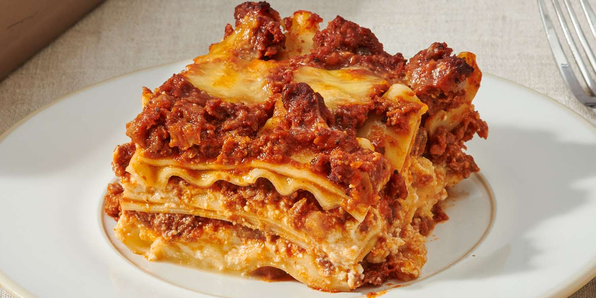

Odin Recipes

Description
a classic Italian comfort food made by alternating wide, flat pasta sheets
with savory meat or tomato sauce, creamy cheese layers, and melted
toppings.
Ingredients
- Lasagna noodles
- Ground meat
- Aromatics & Veggies
- Tomatoes
- Seasonings
- Cooking oil
- cheese
- Egg & Herbs
Steps
- Prepare the Meat Sauce
- Make the Cheese Mixture
- Cook the Noodles
- Assemble the Lasagna
- Bake and Rest